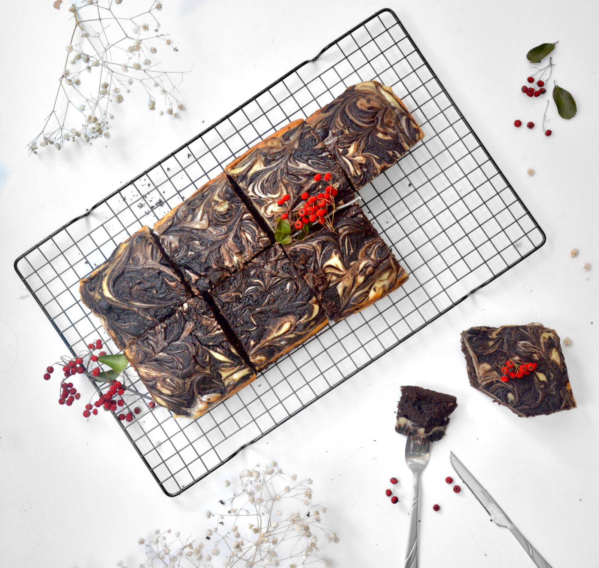
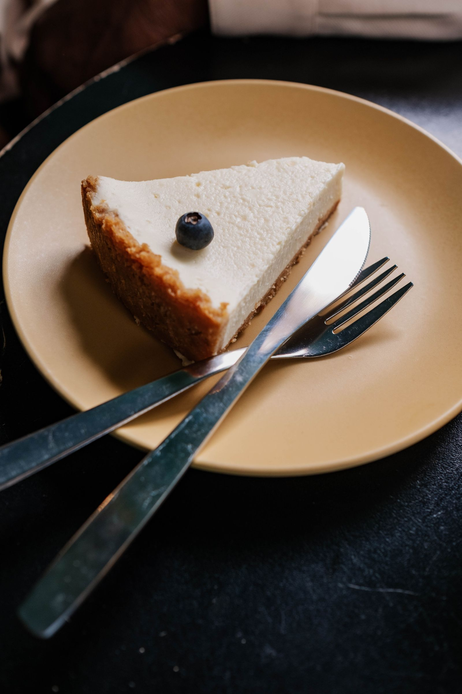
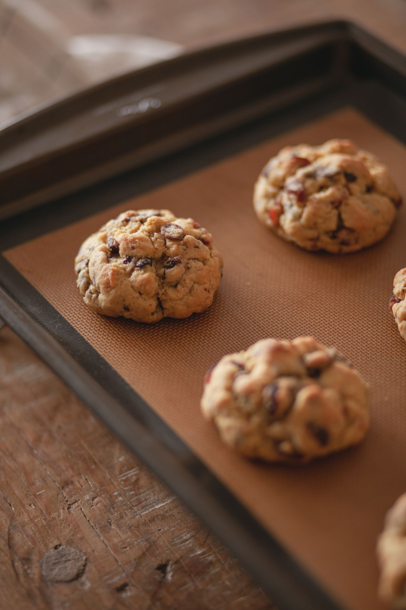
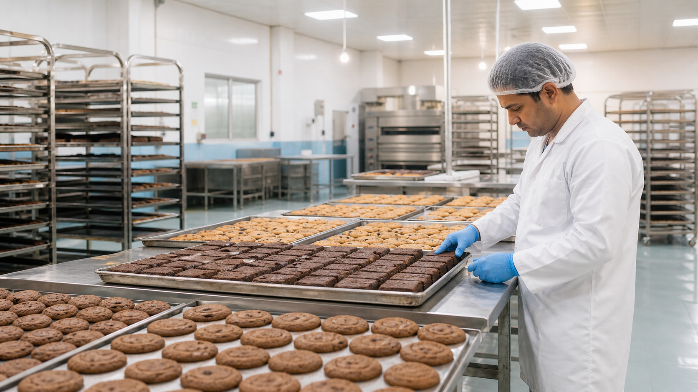

Tell us your operation
Share business type, city, product interest and expected requirement.
Wholesale bakery partner · Gujarat
Brownies, cheesecakes and cookies manufactured for the businesses serving them every day. Consistent products, careful packing and a supply conversation built around your menu.

Not a neighbourhood counter
RF Speciality Foods is positioned as a premium B2B bakery manufacturer: the partner handling product consistency and repeat supply while operators focus on service, brand and growth.
Meet the manufacturing partner →The core wholesale range
Familiar favourites, designed for repeat service. The product page explains the role each range can play across café, restaurant, catering and retail menus.

Rich, portionable and easy to place across plated desserts, display counters and delivery menus.
View brownie range →
Creamy, menu-ready formats for cafés, restaurant desserts and high-impact counter display.
View cheesecake range →
A reliable add-on for coffee service, retail packs, events and convenient grab-and-go demand.
View cookie range →How a partnership begins
This demo keeps the commercial journey visible so a buyer always knows the next step.
Share business type, city, product interest and expected requirement.
Discuss suitable formats and evaluate the products for your actual service style.
Align packaging, quantities, lead time and ordering rhythm before the first supply.
Use customer response to extend flavours, formats or complementary lines.
Selected posts · linked to the originals
Product launches, range guidance and serving formats for cafés, restaurants, hotels, caterers and retail partners.
View @rf_speciality_food ↗
About the manufacturer
Since 2010, the business has helped food-service and retail operators build dessert menus with products that are prepared, packed and supplied for repeat use.
A page built for business proof
“The kind of dessert partner that lets our kitchen focus on service, not rework.”
“Consistent portions made costing and presentation much easier across outlets.”
“A clear range, useful sampling and a product our customers understood immediately.”
For bulk orders and B2B partnerships
Start with the kind of business you run, the products you need and the approximate volume you are planning for.